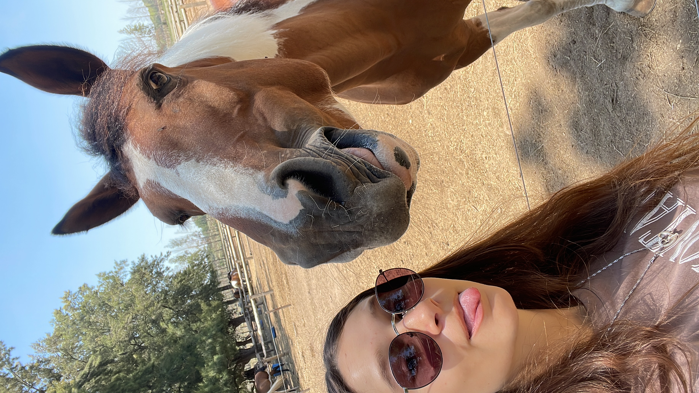
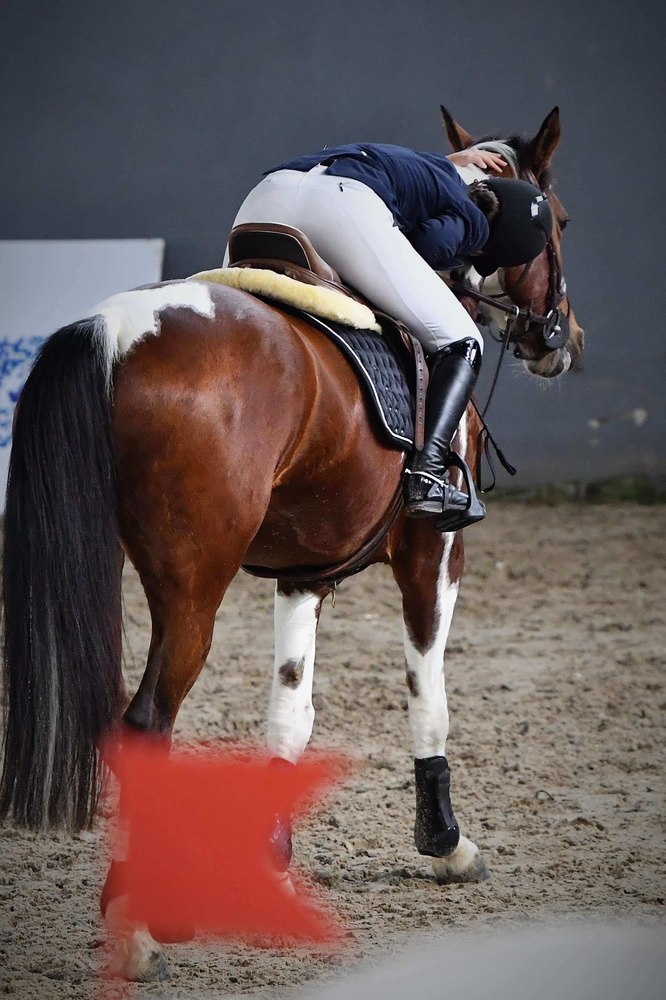
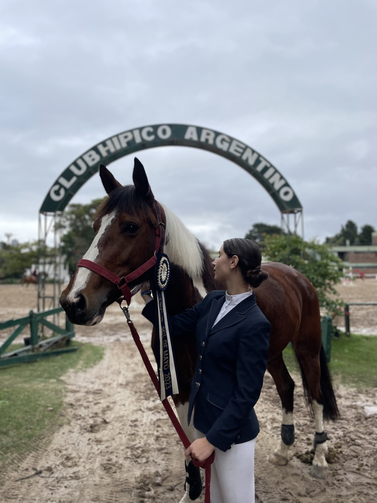
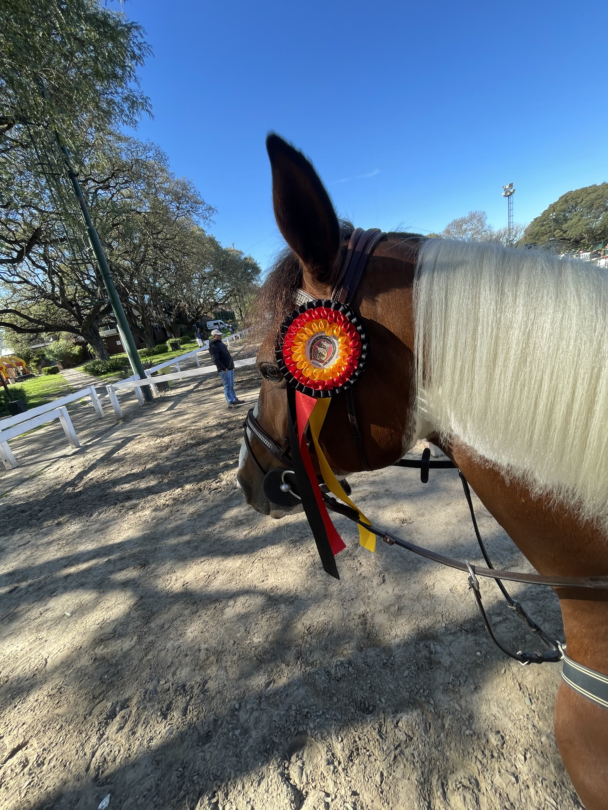
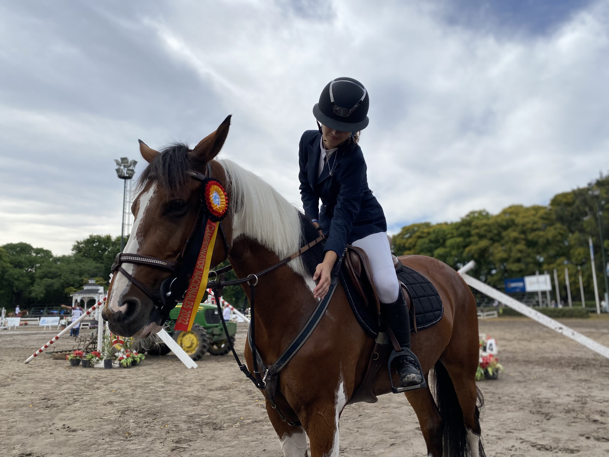
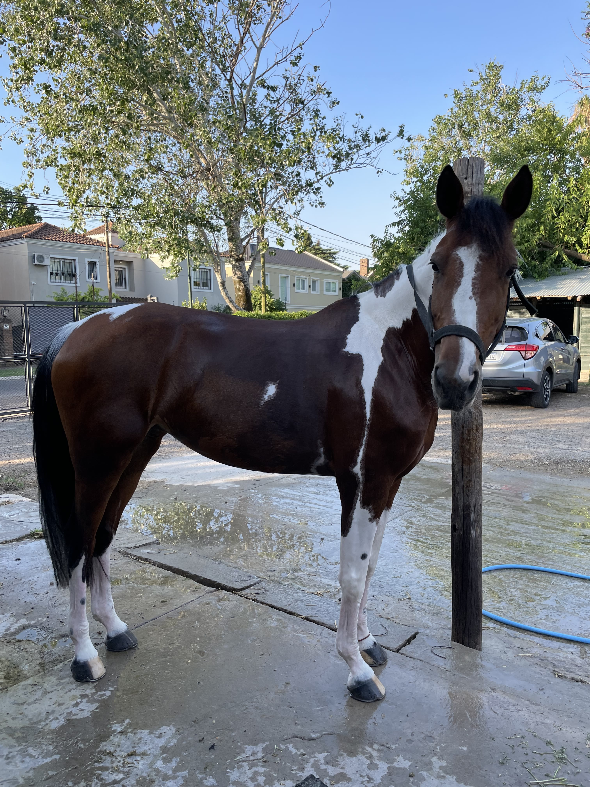
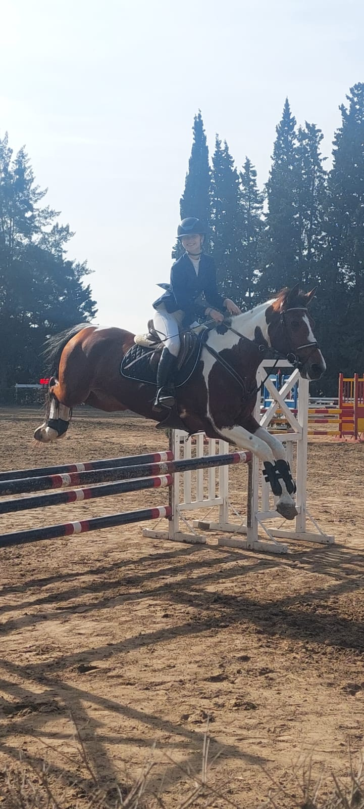
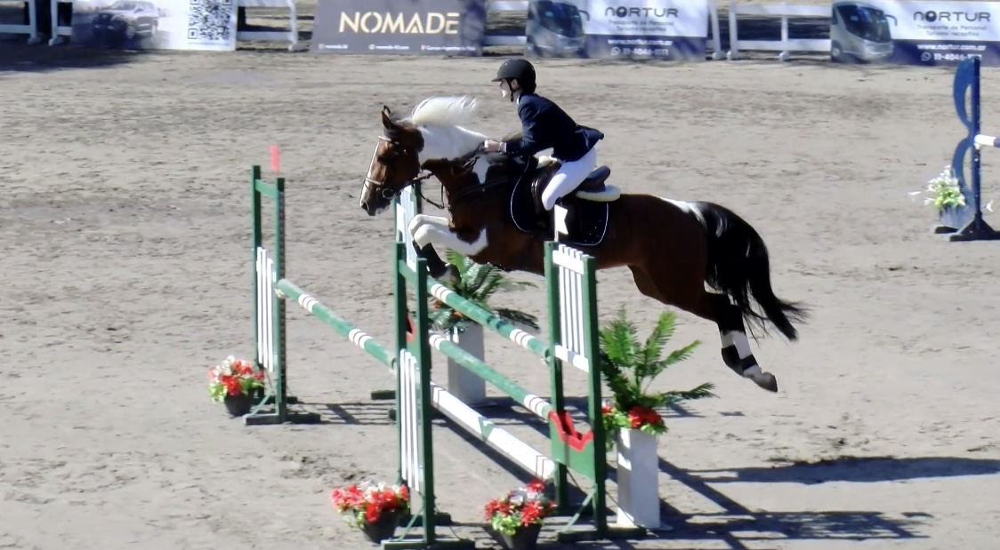

Lola Álvarez · la yegua Comanche
Un rincón para las fotos, los saltos y los videos de las dos. Para acordarse de Comanche como era: atenta, pinta al viento, llevando a Lola por encima de la vara.
Entrar al álbum
Fotos y videos. Deslizá, o usá las flechas.
Club Hípico Argentino. Lola Álvarez Alonso y LV Chas Comanche.
La escarapela en la oreja. El arco del club atrás.
Primera prueba filmada de esa temporada de invierno.
Dos alturas, el mismo par.
El día que la pista les devolvió la cinta.





